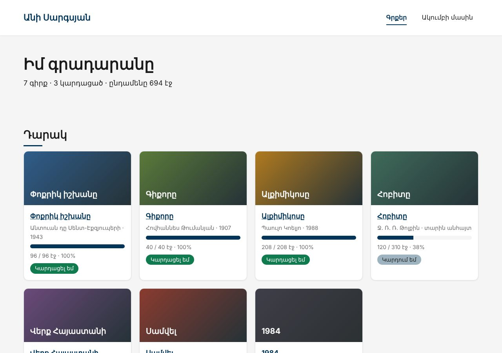
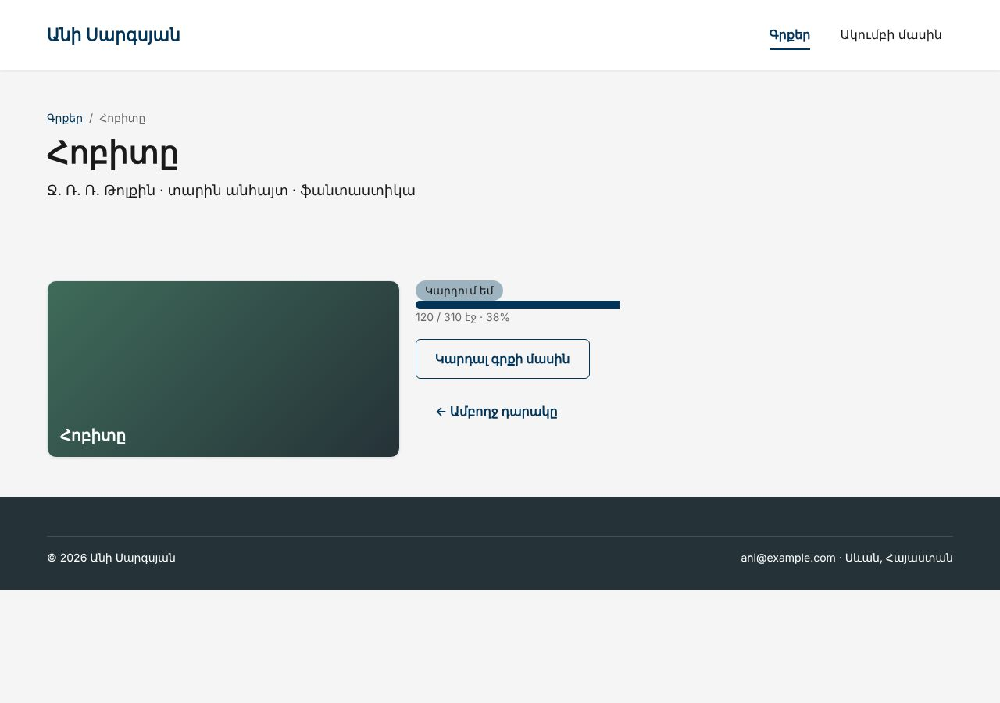
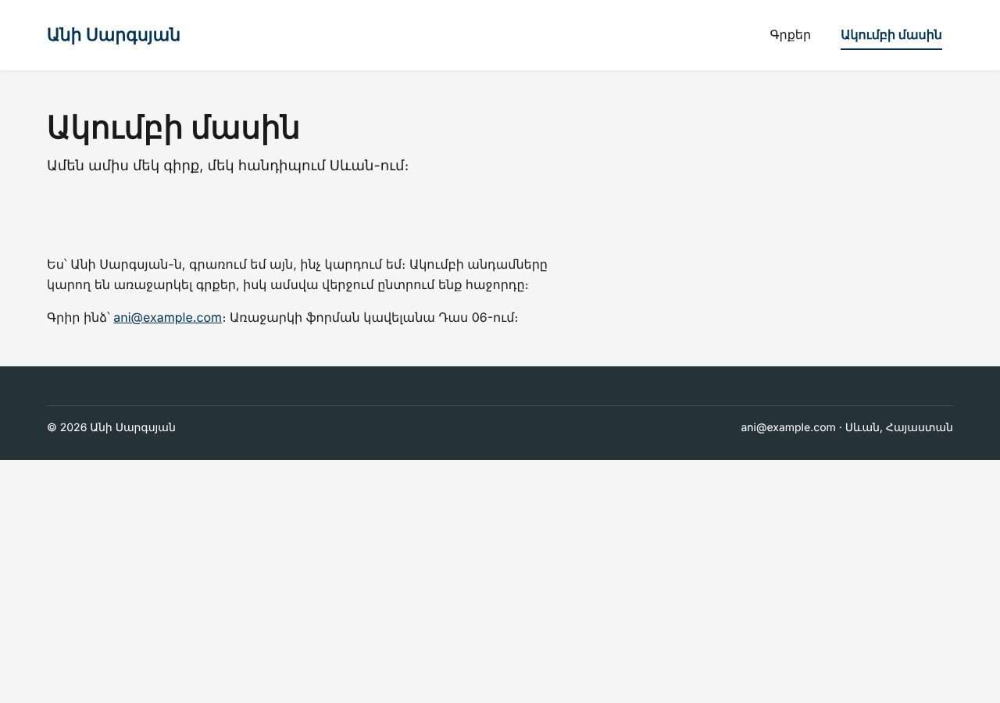

Տնային աշխատանք · PHP Դաս 05 · մինի-նախագիծ
Ամեն էջ հիմա երկու մաս ունի․ PHP ֆայլը պատրաստում է տվյալները, շաբլոնը ցույց է տալիս։ render()-ը և մեկ layout.php-ը փոխարինում են header/footer-ին, իսկ e()-ն և safeUrl()-ը պաշտպանում են էջը, երբ գրքի վերնագրում կամ հղումում կա <script> կամ javascript:։
Դաս 01–05․ htmlspecialchars, e(), render()՝ extract և ob_start, layout, safeUrl()՝ parse_url-ով, հաստատուններ (const), json_encode։ Ֆորմաներ դեռ չկան (Դաս 06)։



Շարունակիր քո նախագիծը։ Եթե բաց ես թողել նախորդ դասը, սկսիր Դաս 04-ի օրինակից։
starter/data.php — գրքերը՝ link-ով, «Հոբիտի» վտանգավոր հղումով և մեկնաբանված XSS գրքով| Գործարկել |
|---|
php -S localhost:8000 |
e()՝ htmlspecialchars(..., ENT_QUOTES | ENT_SUBSTITUTE, 'UTF-8')safeUrl()՝ միայն http, https, mailto, tel և /-ով սկսվող ուղիներ/** Միայն http, https, mailto, tel և ներքին ուղիներ */
function safeUrl(?string $url, string $fallback = '#'): string
{
$url = trim($url ?? '');
if ($url === '') {
return $fallback;
}
if (str_starts_with($url, '/') && !str_starts_with($url, '//')) {
return $url;
}
$scheme = strtolower((string) parse_url($url, PHP_URL_SCHEME));
return in_array($scheme, ['http', 'https', 'mailto', 'tel'], true) ? $url : $fallback;
}render('pages/home', [...])՝ extract + ob_startviews/layout.php՝ մեկ ֆայլ ամբողջ կայքի համար, $title ամեն էջի համար (տնային 6)function render(string $view, array $data = []): string
{
extract($data); // ['title' => 'X'] → $title = 'X'
ob_start();
require __DIR__ . "/views/{$view}index.php, book.php?id=2 (404՝ եթե չկա), about.phpdata.php-ում բացիր մեկնաբանված գիրքը՝ <script> վերնագրովe()-ի և դրանով (տնային 2)javascript:alert(...)․ e()-ն այն չի կանգնեցնում, safeUrl()-ը՝ այո<?= ?> տվյալով՝ e()-ովhref տվյալից՝ e(safeUrl(...))book.php?id=99-ը տալիս է 404 կոդlayout.php| Սխալ | Ինչպես ուղղել |
|---|---|
& էջում | e()-ն կիրառել ես երկու անգամ (տնային 8) |
javascript: հղումը դեռ աշխատում է | e()-ն փախցնում է նիշերը, ոչ սխեման․ պետք է safeUrl() |
Layout-ում Undefined variable $content | render('layout', [...])-ին չես փոխանցել content |
value=<?= e($x) ?>-ը կոտրվում է բացատով | Ատրիբուտը միշտ չակերտներում (տնային 4) |
Սրանք Դաս 05-ի տնային աշխատանքի կետերն են։ «մինի-նախագծում» նշվածները արդեն կատարել ես վերևի քայլերում՝ Անիի ակումբում։ Մնացածը կատարիր ՏեխնոՄարկետում, ինչպես գրված է դասում։
e()-ի և դրանով։ մինի-նախագծում<script>, <img onerror>, <svg onload>, javascript: հղումում, ' onfocus=' ատրիբուտում։ Որո՞նք են աշխատում առանց e()-ի։ մինի-նախագծումe()-ի հետ միասին։ մինի-նախագծումabout.php, նույն layout-ով։ Քանի՞ տող կրկնեցիր՝ համեմատած Դաս 3-ի partials/ մոտեցման հետ։ մինի-նախագծում$title-ը ամեն էջի համար։ մինի-նախագծումe()-ն կիրառում ես երկու անգամ նույն տողի վրա։ մինի-նախագծումjson_encode-ը <script>-ի ներսում հայերեն տեքստի հետ։ Համեմատիր JSON_UNESCAPED_UNICODE-ով և առանց դրա։e()-երը։ Ուղղիր ինքդ։Երբ բաժին 03-ի բոլոր կետերը նշված են, բացիր օրինակը։ Գտիր մեկ բան, որ դու արել ես այլ կերպ, և մտածիր՝ որն է ավելի հասկանալի և ինչու։ Քո լուծումը կարող է տարբերվել և լինել ճիշտ։